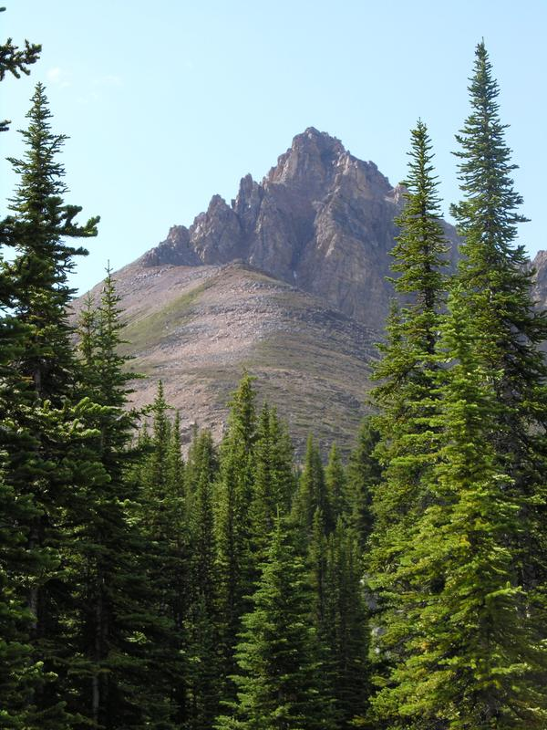

A view of the peak above the lake. You could (and I did) take a trail up above the alpine line where the trees stopped.

This document maintained by
webmaster.org
.
Material Copyright © 1999-2005 Darrin Mossor